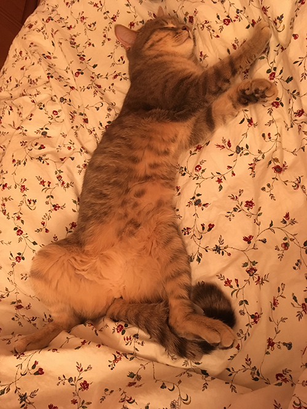

Kto som?

Som webový vývojár samouk, momentálne sa špecializujem na front-end vývoj. Postupne sa plánujem stať full-stack vývojárom, ale to ešte chvíľu potrvá. Aktuálne sídlím v Prahe. Mám rozkošnú mačku, ktorá sa volá Františka. Jej fotku nájdete nižšie. Okrem písania webových stránok rád čítam, snažím sa tvoriť hudbu a milujem dobré jedlo. Viac informácií o tom čo robím nájdete nižšie.

If you are interested in seeing more photos of my cat, just click on either of these photos, to get you to The Gallery of Františka.